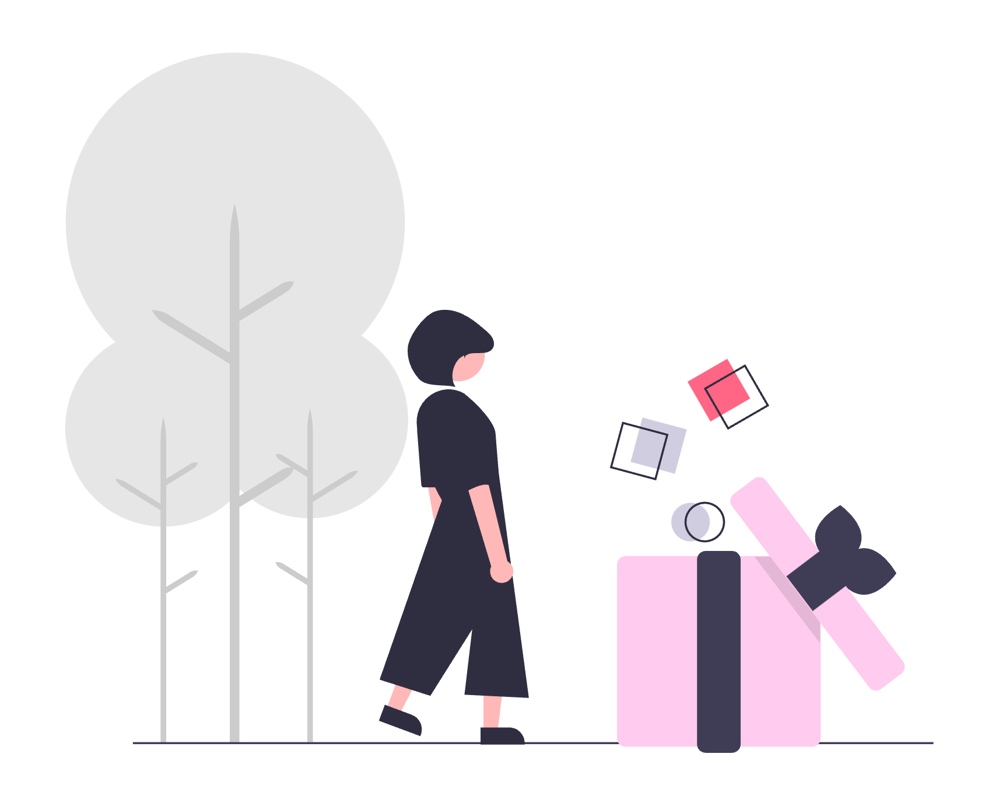

Información Destacada
Canje
Intercambio de medicamentos oncológicos para garantizar acceso equitativo.

Donaciones
Contribuye a la causa mediante donaciones.
Disponibilidad/Precios
Consulta la disponibilidad y precios de productos.